Sarana & Prasarana
26 ruang & area pendukung
Mulai dari 6 ruang kelas, Ruang Bina Diri, Tata Boga, Keterampilan, IT, Perpustakaan, Mushola, UKS, hingga Lapangan Bocce dan Ruang Tunggu Wali Murid.
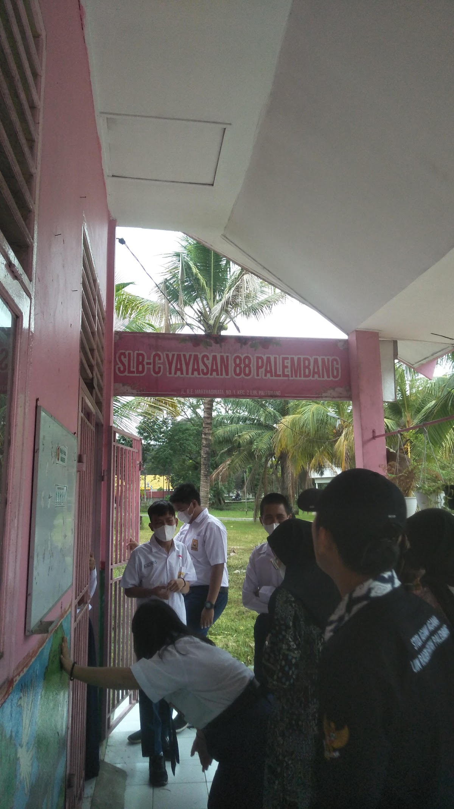
Dokumentasi Asli Gedung SekolahTentang SLB-C Yayasan 88 Palembang
Berlokasi di kawasan Jl. R.E Martadinata, Ilir Timur II, kami adalah sekolah swasta terakreditasi B yang menerapkan Kurikulum Merdeka pada jadwal belajar pagi.
Setiap peserta didik didampingi guru berlatar Pendidikan Khusus, Bimbingan Konseling, dan Psikologi untuk mengembangkan budi pekerti, minat bakat, serta keterampilan hidup mandiri sesuai kemampuannya.
Keseharian & Keterampilan
Pembelajaran memadukan kelas akademik adaptif, vokasi, dan olahraga ruang terbuka.
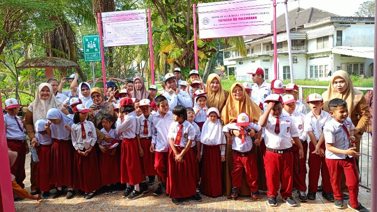
Suasana akrab dan hangat di halaman depan SLB-C Yayasan 88 Palembang.
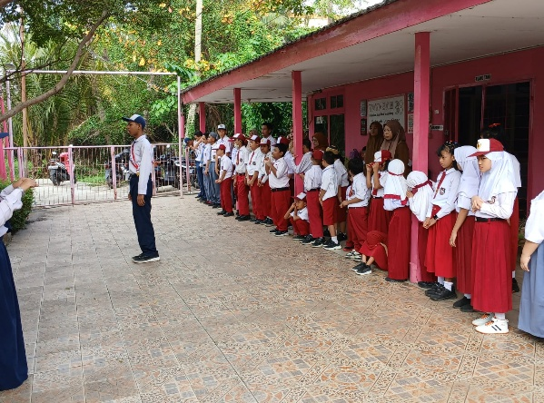
Melatih kedisiplinan, kemandirian, dan kebersamaan rutin di halaman sekolah.
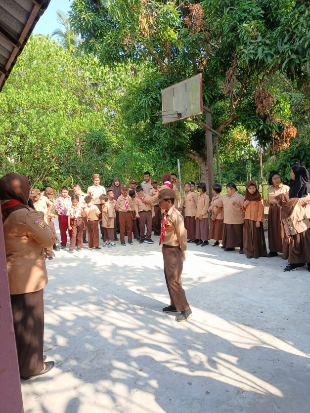
Pembinaan keberanian, kerja sama, dan aktivitas fisik di ruang terbuka yang rindang.
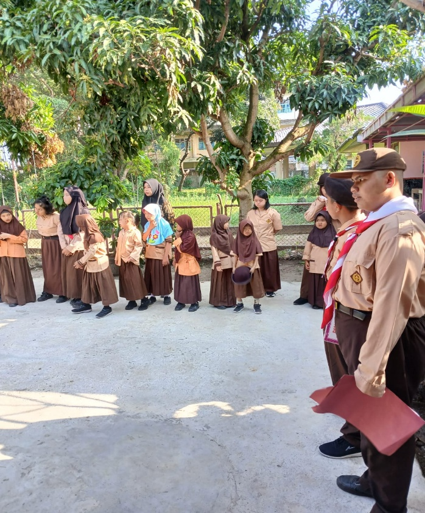
Didampingi pembina dan guru untuk melatih konsentrasi, kepercayaan diri, dan kekompakan.
Seluruh foto pada halaman ini merupakan dokumentasi asli kegiatan, lingkungan, dan tim pendidik SLB-C Yayasan 88 Palembang.
Membangun kebiasaan ibadah, komunikasi dasar, budi pekerti, dan latihan merawat diri di Ruang Bina Diri.
Sekolah Pagi · Kurikulum MerdekaMemperkuat kemandirian sosial, pengenalan minat bakat, keterampilan praktis, serta olahraga adaptif Bocce.
Sekolah Pagi · Kurikulum MerdekaFokus pada keterampilan vokasional di Ruang Tata Boga, Keterampilan, dan IT sebagai bekal kemandirian pascasekolah.
Sekolah Pagi · 8 Dimensi Profil LulusanSarana & Prasarana
Mulai dari 6 ruang kelas, Ruang Bina Diri, Tata Boga, Keterampilan, IT, Perpustakaan, Mushola, UKS, hingga Lapangan Bocce dan Ruang Tunggu Wali Murid.
Tim Pendidik & Tenaga Kependidikan
Dipimpin oleh Endang Supadmi, S.Pd (S1 BK & S1 Pendidikan Khusus), didukung 6 guru pendidik (berlatar Psikologi, Bahasa, Geografi, Fisika) serta 7 tenaga kependidikan.
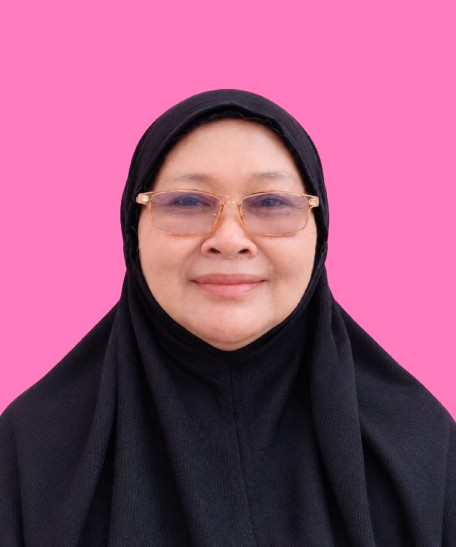
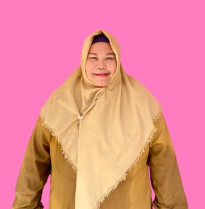
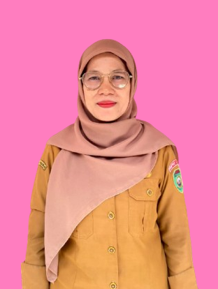
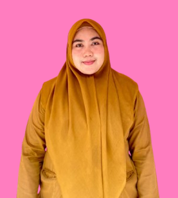
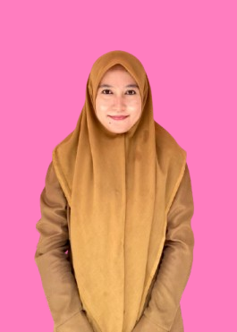
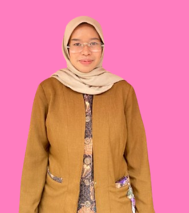
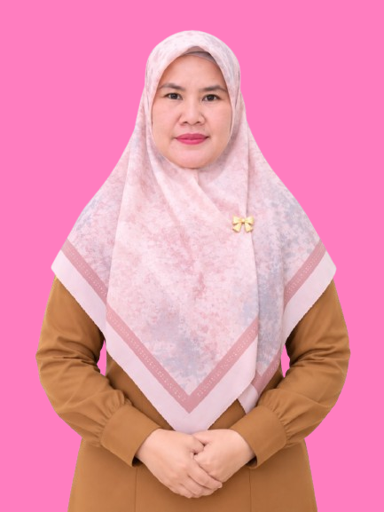
+7 stafInformasi & Kunjungan
Ingin mengetahui info lebih lanjut atau menjadwalkan kunjungan ke sekolah? Kirim pesan singkat ke WhatsApp Kepala Sekolah (0812-7114-8696).
Tujuan: Memaksimalkan akhlak mulia, serta keterampilan untuk hidup mandiri.
Menampilkan 26 dari 26 sarana dan prasarana.
Fasilitas tidak ditemukan.
Coba kata kunci lain atau tampilkan semua kategori.
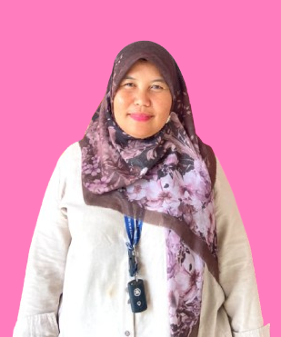
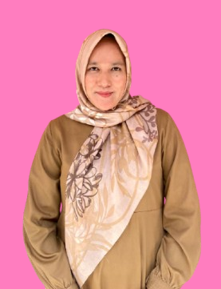
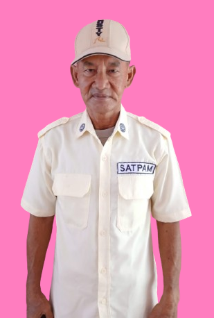
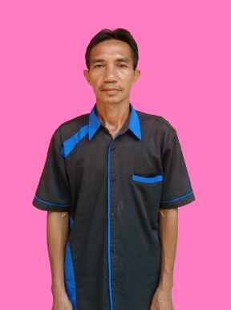
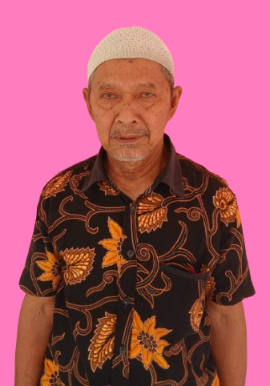